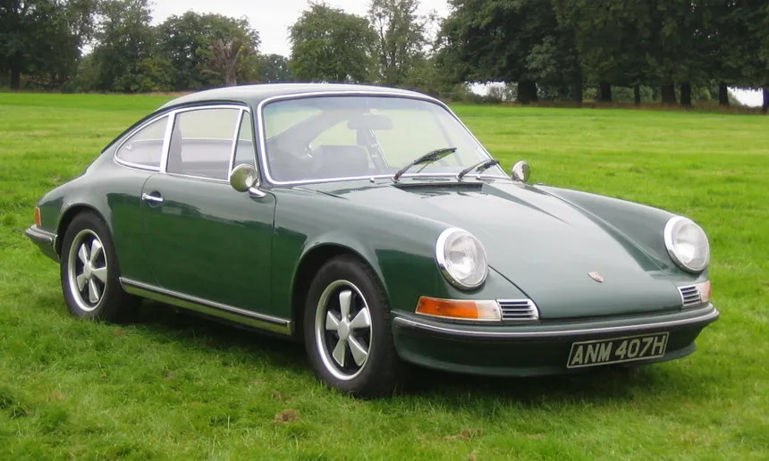
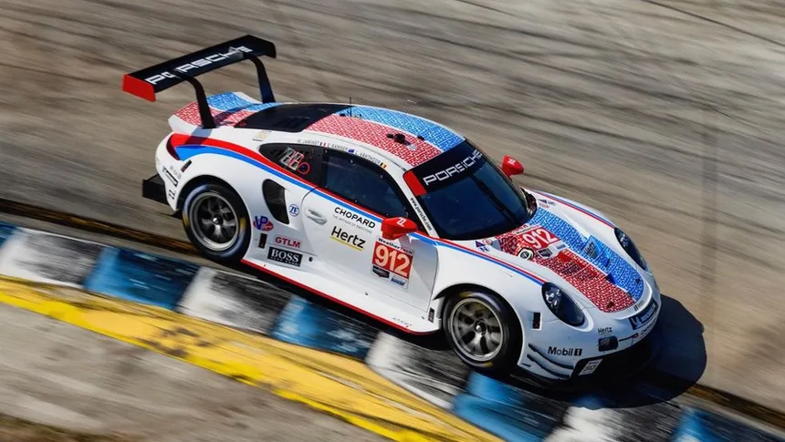

Eredet
A Porsche 911 a németországi Stuttgartban működő Porsche által gyártott sportautó, aminek első generációját 1963-ban mutatták be. Elődjével, a 356-ossal ellentétben nem a farmotoros Volkswagen Bogáron alapul, hanem új, önhordó karosszériát és hathengeres motort terveztek hozzá. 1998-ig, a 996-os kóddal jelzett verzió megjelenéséig léghűtéses volt, utána vízhűtéses lett. A modell alapvető koncepciója változatlan maradt az 1963-as bemutató óta.
Az egyik legsikeresebb versenyautó a világon, számtalan sorozatban indították. 1979-ben a 911-esből fejlesztett Porsche 935-ös a Le Mans-i 24 órás versenyben is diadalmaskodni tudott. Az 1999-es "Az Évszázad Autója" szavazáson az ötödik helyen végzett. Az 1953-tól készülő Chevrolet Corvette után a világ második leghosszabb ideje gyártásban lévő sportautója.